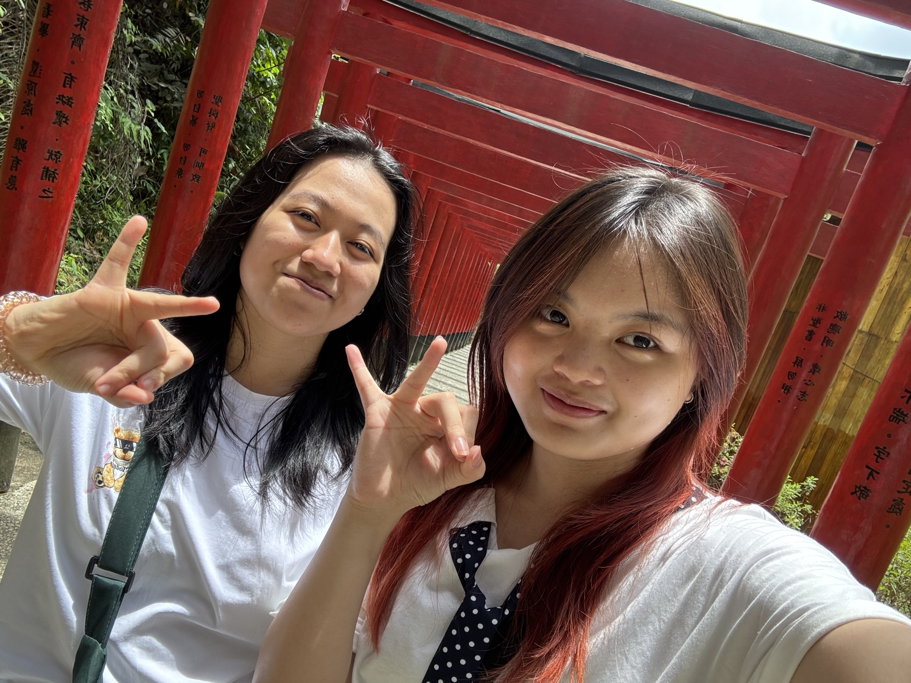
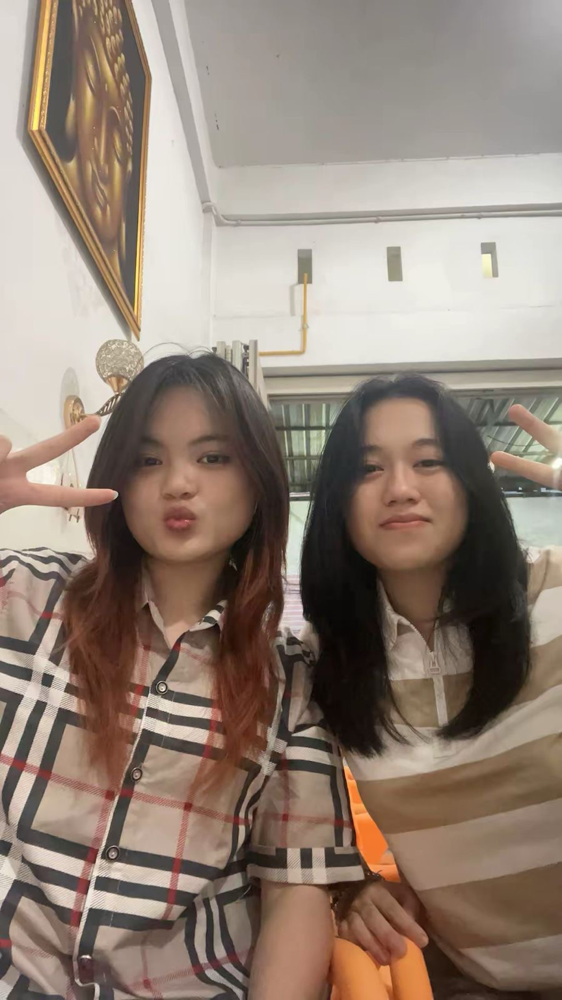
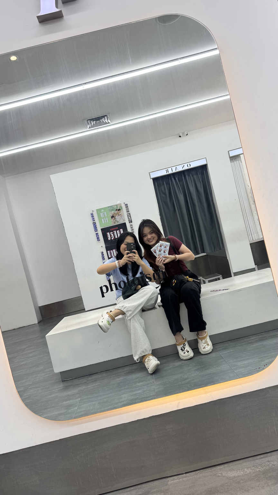
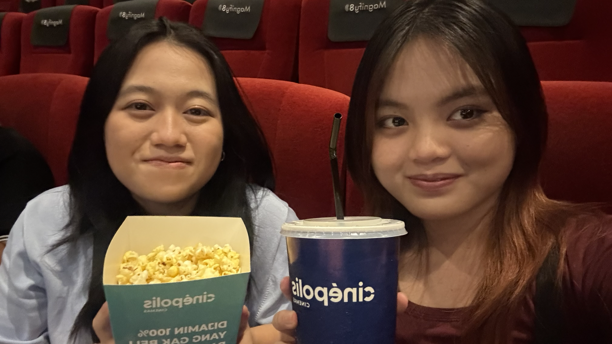
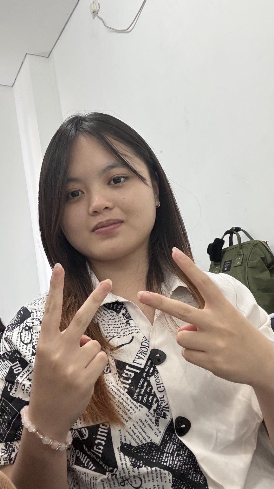

Halo Fely.
Wa sebenarnya gak tau harus mulai dari mana, jadi wa bikin tempat kecil ini buat ngomongin beberapa hal yang buat wa gak nyaman dan susah untuk kasi tau secara langsung. Karena menurut wa, udah awkward aja dan ya... sama-sama udah capek.
Wa buat web ini sebenarnya udah lama, jauh sebelum de kirim link de itu. Cuman web ini wa cicil-cicil buat karena ya, coding juga wkwk. Dan wa juga gak tau kapan mau send, karena ya... udah awkward aja.
Tapi akhirnya wa kirim juga.
Jadi, sebelum lanjut, wa cuma mau bilang: baca pelan-pelan aja ya. Gak perlu langsung jawab apa-apa.
Sebenarnya...
Sebenarnya, wa masih ingat de pernah bilang kalau de gak mau wa berubah. Tapi sekarang, wa malah ngerasa de yang berubah. Sampai di titik wa bisa bilang, “I feel like I don’t even know you anymore.”
Wa gak tau apakah masalahnya ada di wa atau di de. Tapi yang wa rasain sekarang, wa sering ngerasa gak dianggap. Dan karena itu, kadang wa jadi capek buat ngomong lagi. Takut kalau dibahas malah jadi masalah, jadi wa pendam. Tapi makin lama wa pendam, wa malah makin capek sendiri.
Wa juga ngerasa de kayak gak mau menyelesaikan masalah. Bukan karena wa gak ngerti kalau de mungkin bingung harus ngomong apa, atau de mungkin capek juga, apalagi sejak magang. Wa ngerti itu. Tapi wa juga kerja dan wa juga capek. Bedanya, wa tetap mau nyelesaikan karena buat wa, pertemanan kita penting.
Yang bikin wa capek adalah rasanya selalu wa yang harus ngomong duluan. Selalu wa yang mulai ngajak ngobrol, mulai menyelesaikan, mulai memperbaiki. Lama-lama wa jadi ngerasa kayak wa sendiri yang berusaha mempertahankan pertemanan ini.
Fel, wa juga gak terlalu percaya kalau “time will heal everything”. Mungkin kalau cuma sejam atau dua jam, iya, kita butuh waktu buat tenang. Tapi kalau sampai berhari-hari, menurut wa itu bukan lagi soal waktu.
Karena kalau masalahnya cuma didiamkan, menurut wa bukannya hilang, tapi malah makin besar.
Ibarat api kecil yang dibiarkan. Mungkin awalnya kelihatan kecil dan gak terlalu bahaya. Tapi kalau terus didiamkan, bukannya padam, malah bisa jadi makin besar.
Wa mau menyelesaikan masalah. Wa mau ngomong baik-baik. Tapi wa juga capek kalau semuanya harus wa mulai dulu.
Dan mungkin yang paling bikin wa ngerasa de berubah itu bukan cuma satu hal. Tapi semuanya.
Wa orangnya memang suka notice hal-hal kecil. Jadi setiap perubahan kecil yang de lakukan, wa sadar.
Dulu, de sering temanin wa driving malam. Kadang kita bahkan gak ada yang mau dibicarain, tapi ujung-ujungnya tetap ada aja. Entah tanya-tanya hal random, teka-teki, atau cuma ngobrol gak jelas.
Dulu kita juga sering nugas bareng. Saling gantian ngajak. Kadang wa yang ngajak, kadang de yang ngajak.
Main juga begitu. Kalau malam, kita selalu berusaha bagi waktu dan gantian ngajak. Dari hal-hal kecil itu, wa jadi ngerasa kalau, “Oh, orang ini penting buat wa.”
Tapi sekarang?
Entah lah.
Wa ngerti de sekarang punya cowo. Wa ngerti kalau pacaran pasti bikin banyak hal berubah dan mungkin buat de itu semua normal.
Tapi menurut wa, punya pasangan bukan berarti harus kehilangan teman.
Mungkin buat de itu hal yang biasa karena de sedang menjalani hubungan de. Tapi buat orang yang ada di sisi satunya dan merasa perlahan-lahan ditinggalkan, itu tetap sakit.
Dan selama ini wa pendam.
Wa coba ngerti.
Wa coba maklumin.
Wa coba bilang ke diri sendiri kalau mungkin memang lagi sibuk, mungkin lagi capek, mungkin memang karena pacaran.
Tapi lama-lama wa juga capek terus-terusan mengerti sendirian.
Contohnya aja A Way Out. Game itu udah lama banget kita omongin dan kita udah sepakat mau main bareng. Wa juga berkali-kali ngajak, walaupun de sering gak bisa.
Sampai akhirnya kita pernah ngomong kalau nanti kita mainnya pas girls time, dan kalau si Mel gak bisa, baru kita main berdua.
Tapi pada akhirnya gak pernah benar-benar kejadian.
Dan wa capek jadi orang yang selalu ngajak.
Bukan karena wa marah kalau de gak bisa. Wa ngerti kalau de punya kesibukan.
Tapi kalau wa terus yang mengingat, terus yang ngajak, terus yang berusaha mencari waktu, sementara dari sisi de kayak gak ada usaha yang sama, lama-lama wa jadi mikir sendiri.
“Berarti ini gak sepenting itu buat de, ya?”
Dan kalau memang de gak mau main, ya wa juga gak mau maksa.
Jadi akhirnya wa nyerah aja.
Bukan karena wa udah gak peduli.
Justru karena wa terlalu peduli sampai akhirnya wa capek sendiri.
Wa Sebenarnya Gak Nyalahin De
Wa sebenarnya gak nyalahin de karena de sekarang punya cowo.
Wa ngerti kok, kalau sekarang de punya seseorang yang mungkin memang jadi prioritas de. Wa juga ngerti kalau pacaran pasti bikin waktu, perhatian, dan banyak hal jadi berubah. Dan wa gak pernah berharap de harus ninggalin hubungan de cuma demi pertemanan kita.
Wa juga gak mau jadi teman yang seolah-olah nuntut de harus selalu ada buat wa. Wa ngerti de punya kehidupan sendiri, punya kesibukan sendiri, dan wa juga punya kehidupan wa sendiri.
Yang wa permasalahin sebenarnya bukan soal de punya cowo.
Tapi soal setelah de punya cowo, wa merasa posisi wa sebagai teman perlahan-lahan berubah. Dari yang dulu rasanya sama-sama berusaha buat tetap punya waktu, sekarang wa malah sering ngerasa kayak wa yang harus mencari tempat sendiri di kehidupan de.
Dan mungkin buat de, perubahan itu biasa aja. Mungkin de bahkan gak sadar kalau hal-hal kecil yang de lakukan sebenarnya kerasa banget buat wa.
Wa gak minta semuanya harus kembali persis seperti dulu. Wa tahu kita juga sama-sama berubah dan mungkin memang gak mungkin terus seperti dulu.
Wa cuma gak mau pertemanan yang selama ini penting buat wa akhirnya hilang begitu aja karena kita sama-sama diam dan gak pernah ngomongin apa yang sebenarnya kita rasain.
Wa Juga Minta Maaf
Dan di antara semua yang wa sampaikan di sini, wa juga mau minta maaf.
Wa minta maaf kalau selama ini cara wa menyampaikan perasaan wa salah. Wa sadar wa sering ngambek, terus diem, kadang jadi dry text, dan mungkin dari sisi de itu malah bikin de bingung harus ngapain atau harus ngomong apa ke wa.
Kadang wa memang berharap de sadar sendiri kalau wa lagi gak baik-baik aja, padahal wa gak pernah benar-benar menjelaskan apa yang wa rasain. Jadi kalau akhirnya de capek atau bingung menghadapi sikap wa, wa ngerti.
Wa juga minta maaf kalau selama ini wa terlalu banyak berharap, terlalu banyak notice hal-hal kecil, atau terlalu berharap de bisa ngerti apa yang wa rasain tanpa wa jelasin dengan baik.
Mungkin ada saat-saat di mana wa sebenarnya pengen diajak ngomong, tapi cara wa malah menjauh. Pengen diperhatiin, tapi malah diem. Pengen masalahnya diselesaikan, tapi wa sendiri malah ngambek dan bikin suasananya makin awkward.
Wa sadar itu juga salah wa.
Wa gak selalu bisa menyampaikan sesuatu dengan cara yang baik. Kadang wa lebih memilih diam karena takut kalau ngomong malah jadi masalah, tapi akhirnya diamnya wa malah bikin masalah itu semakin panjang.
Jadi kalau selama ini ada sikap wa yang bikin de capek, merasa tertekan, bingung, atau merasa pertemanan ini malah jadi beban, wa benar-benar minta maaf.
Wa sadar wa juga gak selalu benar. Wa juga bisa salah, bisa egois, bisa terlalu memikirkan sesuatu dari sudut pandang wa sendiri.
Wa gak bikin ini buat bilang kalau wa yang paling benar dan de yang salah.
Wa cuma akhirnya memberanikan diri buat jujur tentang apa yang selama ini wa rasain.
Dan kalau ternyata selama ini ada hal dari wa yang bikin de memilih menjauh, wa juga pengen tahu.
Karena kalau kita memang mau memperbaiki sesuatu, wa rasa kita sama-sama harus berani buat ngomong apa yang kita bener bener rasain.
Terima Kasih, Fel
Oh iya, wa juga mau bilang makasih.
Makasih buat semua hal yang udah de lakuin dari dulu sampai sekarang. Mungkin ada banyak hal yang menurut de biasa aja atau bahkan udah de lupa, tapi wa masih ingat.
Makasih buat waktu-waktu yang pernah kita habiskan bareng. Buat malam-malam waktu de temanin wa driving, walaupun kadang kita gak ada yang mau dibahas tapi ujung-ujungnya tetap ada aja yang diomongin. Entah tanya-tanya random, teka-teki, atau ngobrol gak jelas.
Makasih juga buat waktu kita nugas bareng, main bareng, ngobrol sampai malam, dan semua hal kecil lainnya.
Wa mungkin orangnya memang suka notice hal-hal kecil. Jadi banyak banget hal tentang kita yang wa masih ingat sampai sekarang.
Dulu kita bisa saling ngajak, saling cari waktu, dan saling nyempetin. Hal-hal kecil kayak gitu yang bikin wa ngerasa kalau pertemanan kita berarti.
Dan walaupun sekarang banyak hal yang udah berubah, wa gak mau semua yang pernah kita lewatin jadi gak berarti cuma karena sekarang kita lagi ada di fase yang agak gak enak.
Wa tetap inget hal-hal baiknya.
Makasih karena pernah jadi orang yang bisa wa ajak cerita, main, nugas, driving malam, atau bahkan cuma diem-dieman sambil melakukan hal masing-masing.
Makasih buat semua kenangan yang udah kita buat.
Mungkin wa gak selalu bilang, tapi wa beneran menghargai semuanya.
Dan dari dulu sampai sekarang, wa tetap bersyukur pernah kenal dan sedekat itu sama de.
Thank you, Fel. For everything. ✨
Terakhir, Fel
Terakhir, wa cuma mau bilang satu hal.
Wa gak tahu setelah de baca semuanya ini, de bakal ngerasa gimana. Mungkin de kesel, mungkin de sedih, mungkin de bingung, atau mungkin ada beberapa hal yang menurut de gak seperti yang wa pikirin.
Dan wa gak berharap de langsung punya jawaban.
Wa cuma pengen kali ini wa jujur.
Karena selama ini terlalu banyak hal yang wa simpan sendiri, terlalu banyak hal yang wa pikirin sendiri, dan terlalu banyak hal yang akhirnya cuma jadi asumsi di kepala wa.
Mungkin cara wa menyampaikannya juga gak sempurna. Mungkin ada kata-kata wa yang terlalu keras, ada yang mungkin bikin de sakit hati. Tapi semuanya wa tulis karena wa masih peduli.
Kalau wa udah gak peduli, wa rasa wa gak akan sejauh ini.
Wa juga gak tahu setelah ini kita bakal gimana. Apakah semuanya bisa jadi lebih baik, apakah kita butuh waktu, atau mungkin hubungan kita memang akan berubah lagi.
Wa gak mau maksa de buat jadi seperti dulu.
Wa cuma berharap, kalau memang masih ada yang bisa dibicarakan, kita bisa ngomongin itu baik-baik.
Dan kalau ternyata ada hal yang selama ini de rasain tentang wa, wa juga mau denger.
Jadi kali ini, wa udah ngomong.
Sisanya wa serahin ke de.
Apa pun yang de rasain setelah baca ini, wa harap de tahu kalau semua yang wa tulis bukan karena wa benci atau gak menghargai de.
Justru sebaliknya.
Wa nulis semua ini karena de pernah, dan sampai sekarang masih, jadi orang yang penting buat wa.
So that’s all I wanted to say.
Thank you for staying this long, Fel.
And thank you for being a part of my life. ✨
— bontot
Some little memories ✨
Karena ternyata ada banyak hal kecil yang tetap wa simpan.





One last thing ✨
Kalau de udah sampai sini, berarti de beneran baca semuanya.